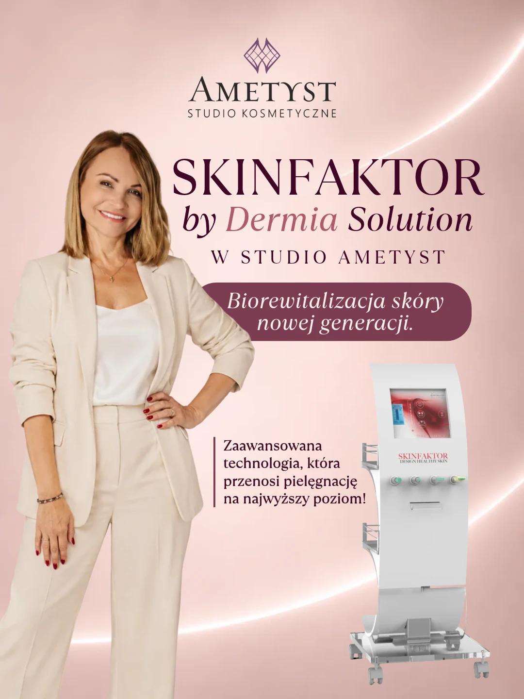

Nowość
SKINFAKTOR by Dermia Solution – biorewitalizacja skóry nowej generacji
Kompleksowa koncepcja zabiegowa, która łączy cztery specjalistyczne techniki pracy ze skórą. Tworzymy z nich spersonalizowane procedury ukierunkowane na regenerację, poprawę kondycji skóry i profilaktykę starzenia.
- Poliabrazjadelikatne polerowanie i wygładzenie naskórka
- Mikro Aktywacja Mstymulacja mikroigłami polimerowymi
- Mikro Aktywacja Sprecyzyjna praca w obrębie zmarszczek
- Dermia Medical – Shibataintensywna przebudowa i regeneracja skóry
Technologię, składniki aktywne i intensywność zabiegu dobieramy indywidualnie do potrzeb Twojej skóry.
Umów konsultację